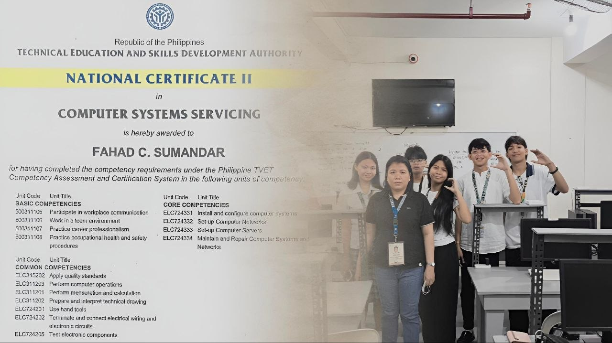

NCII Passer
Computer Systems Servicing (CSS) NC II certification! With a standard 5-year validity window spanning from March 31, 2026, to March 30, 2031, this national credential formally validates your foundational technical expertise in computer hardware, networking, and systems maintenance.